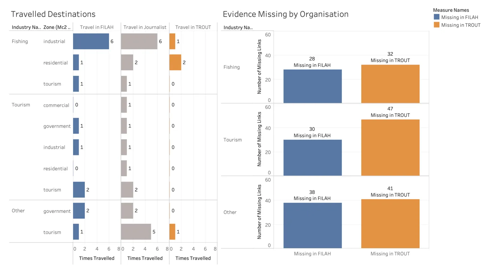
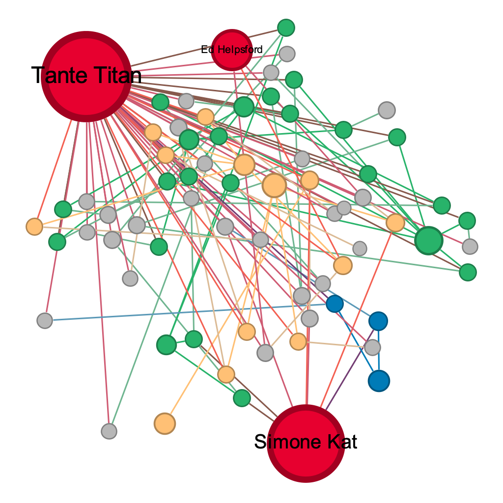

Results and Analysis
Overview of Findings
What makes this finding analytically interesting is that both groups were working from the same pool of evidence. This was not two independent observers reaching different conclusions. It was two groups with opposing agendas selectively extracting from a shared record.
Q1 — Do FILAH’s and TROUT’s own datasets support their accusations?
When analysed in isolation, both datasets appear to support their respective accusations:
- FILAH’s data shows board members engaging with Tourism topics at a mean sentiment of 0.740 versus Fishing topics at only 0.209. This appears to validate FILAH’s claim that the board is biased toward tourism.
- TROUT’s data shows the exact inverse: Fishing sentiment of 0.720 versus Tourism sentiment of only 0.141. This appears to validate TROUT’s claim of pro-fishing bias.
These are not small differences. They look like compelling evidence.
Bias or Perception? Uncovering Narrative Distortions in Industry Sentiment
This dashboard places all three datasets side by side, making the distortions immediately visible by comparing FILAH’s and TROUT’s self-serving narratives against the journalist’s baseline reality.
FILAH Narrative: Industry Sentiment Bias
A horizontal bar chart showing mean sentiment by industry using only FILAH’s data. Fishing sits at 0.209 and Tourism at 0.740 — a gap of over 0.5 sentiment points that appears to validate FILAH’s pro-tourism bias claim. The chart has no negative bars, meaning FILAH’s curated records show universally positive board sentiment. The extreme disproportion between the two industry bars is the manufactured signal.
Baseline Reality: Journalist’s Data
The same bar chart format applied to the full journalist dataset. Fishing sits at 0.490 and Tourism at 0.549 — a difference of less than 0.06 across the full −1 to +1 scale. The two bars are nearly equal in length. This is the ground truth that both activist groups were working from and chose to distort.
TROUT Narrative: Industry Sentiment Bias
TROUT’s version of the same chart produces the mirror image of FILAH’s. Fishing now dominates at 0.720 while Tourism is compressed to 0.141. The chart is the visual inverse of FILAH’s — which is precisely what you would expect if both groups cherry-picked from the same underlying pool of records.
Topic Coverage Comparison Across Datasets
A trellis bar chart showing the frequency of mentions per topic, with three columns side by side: Links in FILAH, Links in Journalist, and Links in TROUT. Each row is a topic, grouped by industry (Fishing, Tourism, Other). This chart is the mechanism-level evidence. Two cells stand out immediately:
- FILAH recorded zero links for
concert— a Tourism topic — while accusing the board of pro-tourism bias. - TROUT recorded zero links for
seafood_festival— a Fishing topic — while accusing the board of pro-fishing bias.
These are not gaps from incomplete data collection. The full journalist column shows non-zero counts for both topics. Both groups removed the single topic that most directly undermined their argument.
Perceived Bias vs Actual Sentiment Gap
A diverging bar chart quantifying the overstatement in each group’s claims, with each group–industry combination as a row. Negative bars extend left (understatement), positive bars extend right (overstatement):
| Claimed | Reality | Gap | |
|---|---|---|---|
| FILAH Tourism | 0.74 | 0.55 | +0.19 |
| FILAH Fishing | 0.21 | 0.49 | −0.28 |
| TROUT Fishing | 0.72 | 0.49 | +0.23 |
| TROUT Tourism | 0.14 | 0.55 | −0.41 |
TROUT’s tourism understatement of −0.41 is the largest single distortion in the chart — and the most consequential, as it is the primary mechanism behind their pro-fishing bias claim.
Q2 — Is the COOTEFOO board actually biased?
Using the complete journalist dataset across all 6 members:
Fishing
Mean sentiment = 0.490
43 positive / 10 negative interactions
Tourism
Mean sentiment = 0.549
58 positive / 6 negative interactions
A difference of 0.059 across a −1 to +1 scale does not constitute meaningful bias. Both industries receive positive engagement.
Inside the Board: Member Contributions and Sentiment Patterns
This dashboard uses the full journalist dataset to examine what the board actually does — how members distribute their participation across industries and whether sentiment patterns suggest any systematic lean.
Board Sentiment Direction
A diverging bar chart showing the net count of positive versus negative board interactions by industry, using the full journalist dataset. Green bars extend right (positive interactions), red bars extend left (negative interactions). Fishing shows roughly 43 positive against 10 negative; Tourism shows roughly 58 positive against 6 negative; Other shows a similar positive-dominant profile. The green bars dominate across all three industry categories — the board as a whole engages positively with both Fishing and Tourism, with no meaningful directional imbalance.
Member Contribution by Industry Topics
A stacked horizontal bar chart showing each member’s total participation link count, broken down by industry (Fishing = orange, Tourism = blue, Other = grey). Members are sorted by total contribution count. Tante Titan and Simone Kat are the two highest contributors overall. Tante Titan’s bar is dominated by Other and Fishing; Simone Kat’s by Tourism and Fishing in roughly equal measure. Teddy Goldstein’s bar is exclusively Fishing — a visually distinctive profile explained by his TROUT-only presence. Seal has the lowest total count across all members. This chart establishes the raw participation baseline before sentiment values are applied.
Member-Level Sentiment Across Topics
A heatmap with members as rows and individual topics as columns, grouped by industry. Cell colour encodes mean sentiment on a red (−1) to blue (+1) scale. The key analytical signal here is coverage: blank cells indicate a member has no recorded participation in that topic under the current dataset view. Simone Kat’s deep red cell in the affordable_housing fishing topic and Teddy Goldstein’s red cell in expanding_tourist_wharf are the two most notable negative-sentiment entries. The spread of coloured cells across both Fishing and Tourism columns for most members confirms that no member is exclusively engaged with one industry.
Member Sentiment vs Board Average
A horizontal bar chart showing each member’s mean sentiment per industry (Fishing = orange, Tourism = blue, Other = grey), plotted against a vertical reference line marking the board-wide average of 0.449. The most notable departure is Teddy Goldstein’s tourism bar, which extends left to −0.50 — the only negative industry-level bar on the entire chart. Simone Kat’s tourism bar extends to approximately 0.91, the highest individual value. All other members cluster between 0 and 1. The individual variation is real, but it is variation between members, not a systematic board-level lean.
Q3 — Are the accusations weakened by the full dataset?
The sentiment scores for individual members do not change between datasets. What changes is who is present and what topics are covered — and this shifts the overall picture dramatically.
FILAH excluded:
Teddy Goldstein (Fishing=0.85)
Ed Helpsford (Fishing=1.0)
Tante Titan (Fishing=0.75)
→ These three are precisely the strongest pro-fishing members. Their absence drove FILAH’s fishing average down to 0.209.
TROUT excluded:
Simone Kat (Tourism=0.91)
Carol Limpet (Tourism=0.68)
Tante Titan (Tourism=0.47)
→ These three are precisely the strongest pro-tourism members. Their absence drove TROUT’s tourism average down to 0.141.
The suppression numbers
| Missing from FILAH | Missing from TROUT | |
|---|---|---|
| Fishing participation links | 28 | 32 |
| Tourism participation links | 30 | 47 |
| Other participation links | 38 | 41 |
Who Shapes the Narrative? Member Inclusion and Topic Focus
This dashboard reveals the editorial decisions each group made: which members they included, which they excluded, and which topics each included member dominated.
Member Inclusion in FILAH
A bubble chart with members as rows and two columns: Included (green bubbles) and Excluded (red bubbles). Bubble size encodes participation count. Tante Titan (54 records), Teddy Goldstein (22 records), and Ed Helpsford (20 records) appear as large red bubbles in the Excluded column — they were entirely omitted from FILAH’s dataset. Simone Kat (45), Carol Limpet (21), and Seal (12) appear as green bubbles in the Included column. The pattern is not random: the three excluded members are precisely the three with the highest pro-fishing sentiment scores in the full dataset.
Member Inclusion in TROUT
The mirror-image bubble chart for TROUT. Here Tante Titan (54), Simone Kat (45), and Carol Limpet (21) appear as large red excluded bubbles. Teddy Goldstein (22), Ed Helpsford (20), and Seal (12) are included. Again, the excluded members are not arbitrary — they are the three with the highest pro-tourism sentiment scores. The symmetry between the two charts is the analytical core of this dashboard: each group excluded precisely the members whose records would have moderated their claimed bias.
Board Participation by Member and Topic Area
A treemap broken out by industry colour (Fishing = orange, Tourism = blue, Other = grey), where each tile represents a member–topic pairing sized by participation count. The largest tiles are Tante Titan × seafood_festival and waterfront_market, and Simone Kat × fish_vacuum and heritage_walking_tour. The treemap makes visible which member–topic combinations carry the most weight in each industry group — and which are conspicuously absent when switching between dataset views.
The travel evidence
FILAH recorded 15 of 22 travel links. TROUT recorded only 4 of 22. The near-total absence of travel records from TROUT’s dataset is striking — the geographic dimension of board member activity was almost entirely suppressed. Of FILAH’s 15 recorded travel links, 7 were to industrial zones associated with fishing activity, directly contradicting their claim of pro-tourism bias.

Tante Titan — the suppressed member
She does not fit either narrative. She is not dramatically pro-tourism (which would support FILAH’s case) nor dramatically pro-fishing (which would support TROUT’s case). Her balanced profile made her inconvenient for both groups, so both groups removed her entirely.
Evaluating Activist Claims Against Full Evidence and Member-Level Sentiment
This dashboard directly confronts the gap between what each group claimed and what the full record shows, using three charts that together move from individual trajectories to group-level overstatement to a spatial summary of who was useful to whom.
Changes in Member Sentiment Under Partial vs Full Evidence
A slopegraph tracing each board member’s sentiment value across four sequential vantage points along the x-axis: Fishing Sentiment (FILAH), Fishing Sentiment (Full Board), Tourism Sentiment (Full Board), and Tourism Sentiment (TROUT). Each coloured line is one member. Reading left to right, the chart reveals how dramatically sentiment profiles shift as the evidence base expands from partial to complete.
The most striking trajectory is Teddy Goldstein (dark blue line): he does not appear at all in the FILAH column because FILAH excluded him entirely, so his line begins at the Full Board fishing column at roughly 0.85, then plunges to −0.50 at the TROUT tourism column — the most extreme endpoint on the chart and the only negative value. This single line captures both editorial strategies simultaneously: FILAH hid him, and TROUT showed precisely his most damaging dimension.
Simone Kat (green) runs in the opposite direction, ending at 0.91 for tourism in the full board view — a value TROUT suppressed by excluding her. Carol Limpet (yellow, ending at 0.68) and Tante Titan (orange, ending at 0.47) converge in the middle range. Seal (teal) remains flat near 0.10 across all four positions, confirming her profile was not selectively useful to either group. The convergence and divergence of lines across the four columns makes visible what summary tables cannot: the same members look different not because their records changed, but because of who chose to include them.
Counterfactual: Claimed vs Reality
A bullet chart with four rows — FILAH × Fishing, FILAH × Tourism, TROUT × Fishing, TROUT × Tourism — where each row shows the group’s claimed sentiment as an orange bar and the full journalist reality as a blue dot.
For FILAH, the Tourism bar extends to approximately 0.83, while the reality dot sits at 0.55 — an overstatement of roughly +0.19. The Fishing bar is compressed to around 0.25 while the journalist reality dot sits near 0.51 — an understatement of −0.28, which is the directional gap FILAH needed to construct its pro-tourism bias narrative.
For TROUT, the Fishing bar stretches close to the full axis at approximately 0.95, while reality sits at ~0.51 — an overstatement of +0.23. The Tourism bar is compressed to roughly 0.18, against a journalist reality of ~0.55 — an understatement of −0.41, the largest single distortion in the chart and the clearest single quantification of editorial bias in the project.
Swing Witness Scatterplot
A scatterplot with Fishing Sentiment (Full Board) on the x-axis and Tourism Sentiment (Full Board) on the y-axis. Each board member is a labelled point. Reference lines mark the board-wide averages: Fishing = 0.5917, Tourism = 0.396, dividing the space into four quadrants.
The positions are analytically revealing. Ed Helpsford sits far right at approximately (0.95, 0.55) — high fishing, moderate tourism — a profile FILAH needed to hide. Tante Titan sits near (0.75, 0.50), close to the board average on both axes, which explains precisely why both groups excluded her: she is the most balanced member and therefore the least useful to either partisan argument. Carol Limpet clusters near Ed Helpsford at roughly (0.70, 0.55). Simone Kat sits in the extreme upper-left at approximately (0.10, 1.00) — very low fishing, maximum tourism — the clearest outlier on tourism sentiment and the member TROUT most needed to suppress. Teddy Goldstein sits in the lower-right at approximately (0.85, −0.50) — high fishing, the only negative tourism value on the board — the member FILAH most needed to hide. Seal sits in the lower-left near (0.10, 0.05), low engagement across both industries and consistent across all datasets.
Network Graph — Board Member Connections
This interactive network maps each board member’s participation across discussions and travel records. Node size reflects connection count. Edge colour reflects dataset source. Click a board member to highlight their connections. Use the filter buttons to switch between datasets.
Network Graph — Board Member Connections
This interactive network maps each board member's participation across discussions and travel records. Node size reflects connection count. Edge colour reflects dataset source. Click a board member to highlight their connections. Use the filters to explore by dataset or industry.
Drag nodes to rearrange. Scroll to zoom. Click board members (red) to highlight connections. Click background to reset.
▶ View static Gephi exports
Tante Titan — 54 records, absent from both FILAH and TROUT

Teddy Goldstein — Only in TROUT; hidden by FILAH entirely

Full journalist network — all 6 board members, all topics

The three static Gephi network exports embedded above (Tante Titan, Teddy Goldstein, and full journalist network) each serve a distinct analytical purpose and are described below.
Full Journalist Network
The full journalist network renders all 740 nodes and their connections simultaneously. Board members appear as large red nodes scaled by connection count — Tante Titan and Simone Kat are immediately the most prominent by size, reflecting their 54 and 45 participation records respectively. Topic nodes are coloured by industry: blue for Tourism, orange for Fishing, green for Other, grey for uncategorised. The density of the network at full scale makes individual profiles difficult to read, but the overall structure confirms that board members are connected to nodes across all three industry colour groups — no member is visually isolated to a single industry cluster. This is the network-level baseline for the near-balance finding in Q2.
Tante Titan Ego Network
Filtering to Tante Titan’s connections produces the largest ego network on the board. Her node dominates by size, and her edges reach across orange Fishing, green Other, and blue Tourism topic nodes in roughly even proportion. There is no visible clustering toward any single industry. This network export is the most direct visual answer to why both groups excluded her: there is no clean narrative to extract from her record. She is too balanced to serve either accusation, and her sheer volume of 54 records means her inclusion would have substantially moderated whichever group’s averages she appeared in.
Teddy Goldstein Ego Network
Teddy Goldstein’s ego network is substantially smaller — 22 records against Tante Titan’s 54 — but its edge composition is analytically striking. The majority of his connections run to blue Tourism topic nodes, yet his sentiment scores on those connections are negative (−0.50 across tourism topics). Edge colours confirm that almost all of Teddy’s connections were recorded exclusively by TROUT — there are essentially no FILAH-coloured edges in this export. Seal also appears as a labelled board member node, indicating at least one shared participation context. This graph provides the network-level confirmation of what the slopegraph and scatterplot showed numerically: Teddy is TROUT’s most useful exhibit precisely because his tourism connections carry negative sentiment, and FILAH suppressed him entirely for the same reason.
Q4 — How does an individual member’s story change across datasets?
The most demonstrative case: Teddy Goldstein
Teddy appears only in TROUT’s dataset. Switching the Dataset View reveals:
- In TROUT’s view: Teddy is visible. Fishing=0.85, Tourism=−0.50. He looks like a fishing partisan and provides strong apparent support for TROUT’s accusation.
- In FILAH’s view: Teddy does not exist. FILAH recorded none of his 22 participation records.
- In Full Journalist: Same values as TROUT (0.85 / −0.50) — the full dataset does not add new Teddy records, it adds other members who counterbalance him.
TROUT showed Teddy because his profile fit their narrative. FILAH hid him because his pro-fishing sentiment would have undermined their claim.
The most dramatic absence: Tante Titan
Selecting Tante Titan and switching to FILAH or TROUT view produces empty charts. Switching to Full Journalist reveals 54 records with a balanced, positive profile. The contrast between empty panels and populated full-dataset panels is the clearest single illustration of deliberate suppression in the entire project.
Breaking Down Member Sentiment
This dashboard is designed for Ms. Moray to explore any individual member’s profile interactively — selecting a name and toggling the dataset view to see how the story changes. The two charts work together: the upper chart gives the industry-level summary, and the lower chart gives the topic-level detail.
Member Sentiment by Industry
A horizontal bar chart showing the selected member’s mean sentiment broken down by industry (Fishing = orange, Tourism = blue, Other = grey), plotted on a −1 to +1 scale with a dashed zero-line as reference. The chart responds to two filter controls: Member Name and Dataset View (Full Journalist / FILAH / TROUT).
When Tante Titan is selected under Full Journalist view, her bars read approximately Fishing = 0.75, Tourism = 0.47, Other well above zero — a broadly positive, balanced profile. Switching the Dataset View to FILAH or TROUT collapses the chart to empty: no bars appear because neither group recorded a single one of her 54 links. The contrast between a fully populated full-journalist chart and completely blank partial-dataset panels is the dashboard’s analytical core. The absence of bars is itself the evidence.
For members who do appear in partial datasets — for example, selecting Teddy Goldstein with TROUT view — the bar chart shows Fishing strongly positive and Tourism negative, precisely the profile TROUT needed to support their accusation.
Sentiment by Topic
A dot plot beneath the industry bar chart that breaks the same selection down to individual topic level. Each row is a short topic name; each dot is the member’s mean sentiment on that topic, coloured by industry. The dot plot is chosen over a bar chart because it communicates both the value and the presence or absence of participation cleanly — a missing row is a missing record, not a zero.
With Tante Titan selected in Full Journalist view, dots appear across topics spanning both Fishing and Tourism columns: seafood_festival (Fishing, orange, ~0.75), concert (Tourism, blue, ~0.47), waterfront_market, heritage_walking_tour, and several Others. The spread confirms the balanced engagement visible in the bar chart above. Switching to FILAH or TROUT view removes all dots entirely — the empty axis tells the story more powerfully than any filled chart could.
For Teddy Goldstein in TROUT view, the dot plot shows his tourism-topic dots clustered below zero (expanding tourist wharf, marine life deck) while his fishing-topic dots sit above 0.8. The topic-level granularity here is what the industry-aggregated bar chart cannot show alone: the pattern is not just directional, it is topic-specific and deliberate.